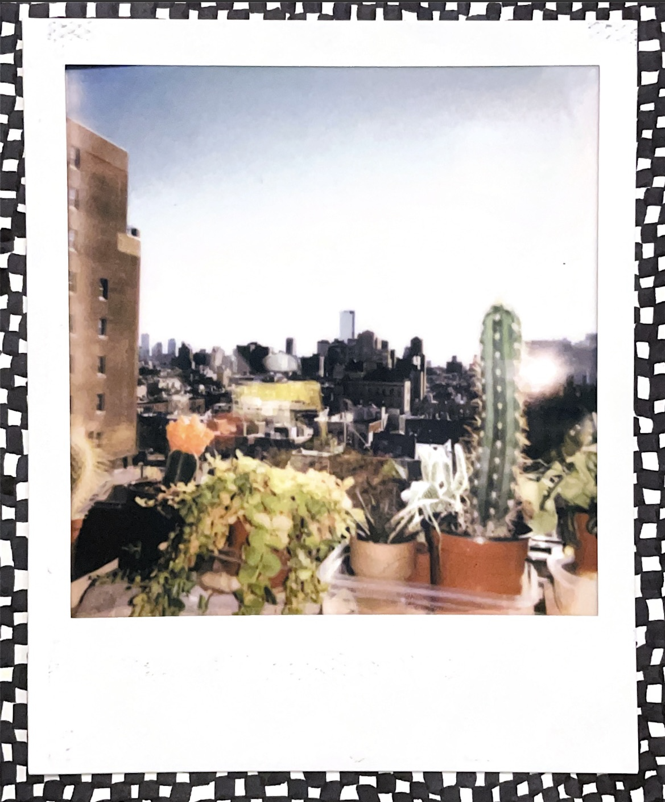
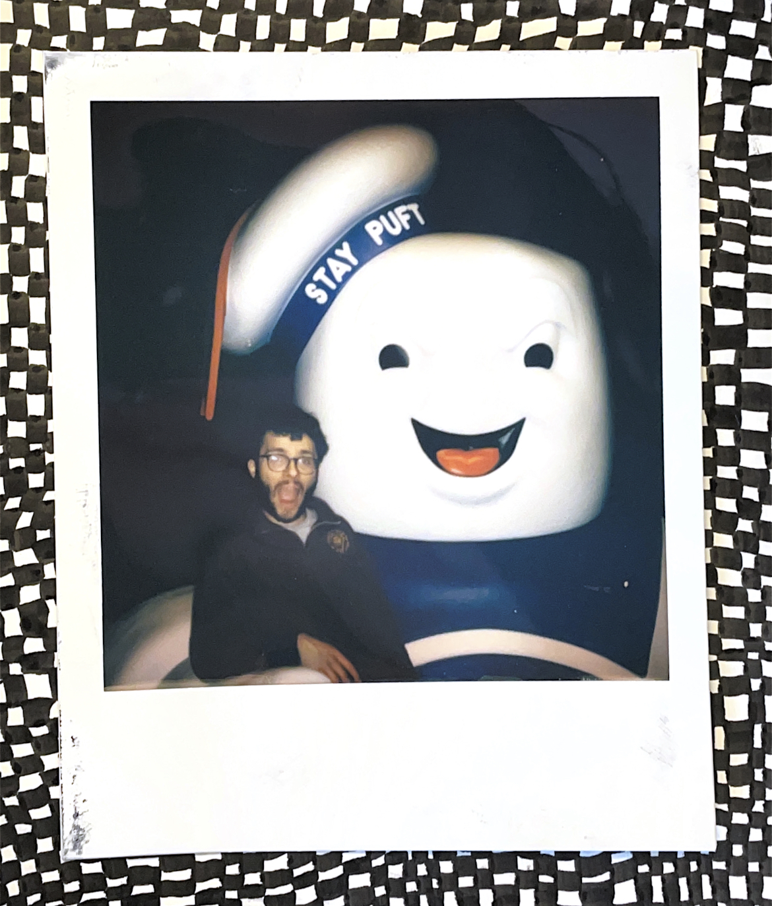
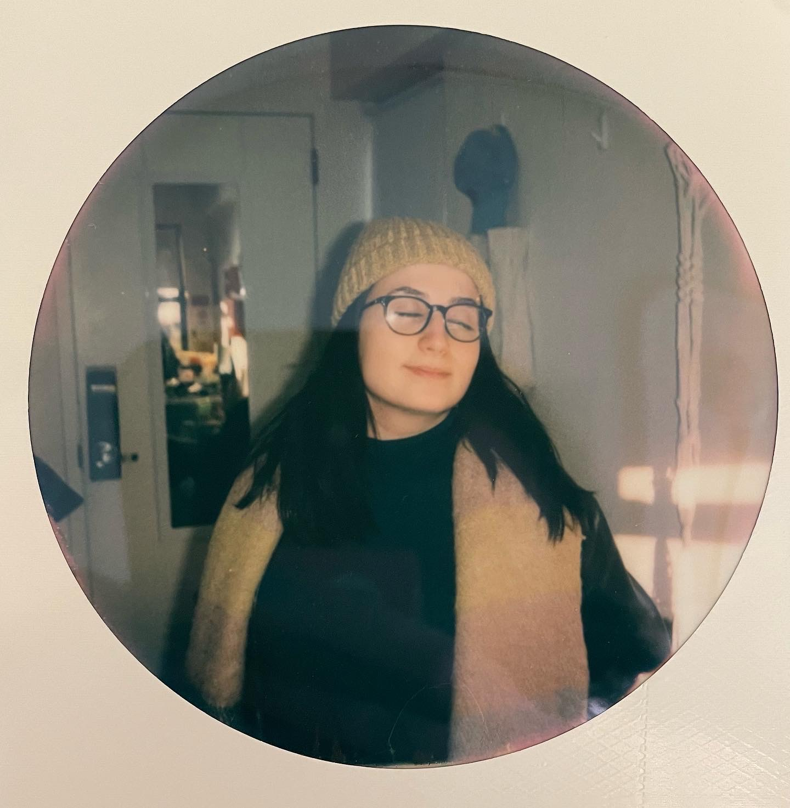
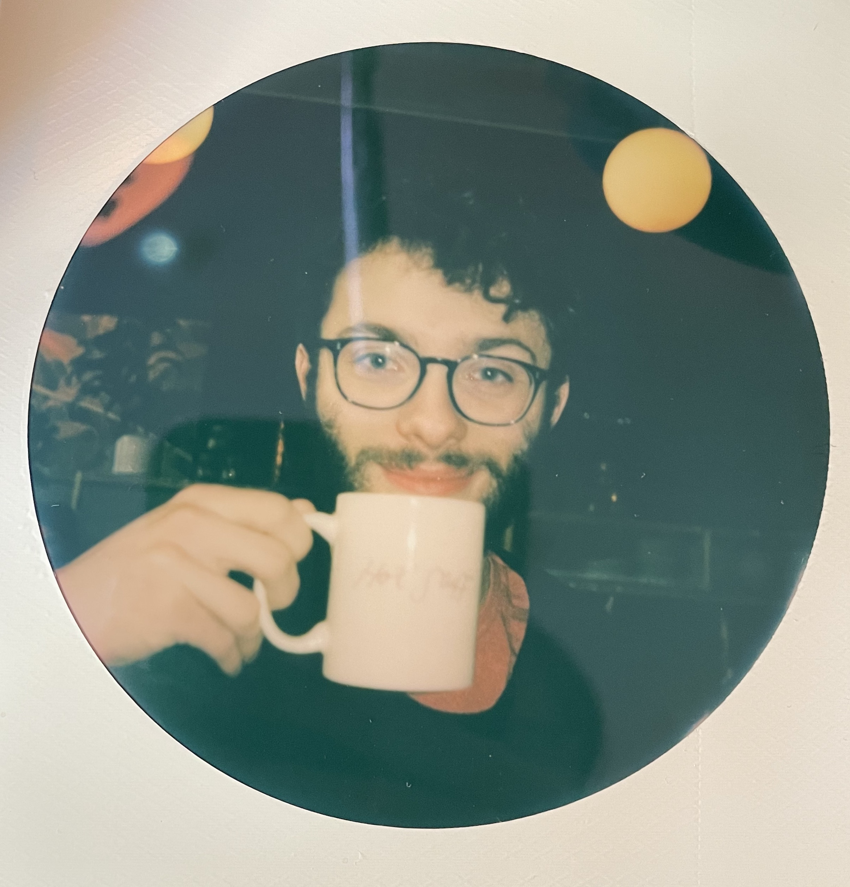

hello!
hello poetry explorers!
and welcome to the milk carton!
milk carton zines is a collection of poetry zines about all different types of love, from my life, and from others. The idea of the milk carton came from using the old used paper cartons from my oat milk to collect my paper scraps and collected images to recycle. To make all of the zines, I use collected paper and images from what I had saved in the milk carton. I hope that through sharing all of these thoughts that any adventurer here could find something that they can relate too. If one of the images on the title page interests you, try finding them in one of the poems...there might be a suprise in store :)
p.s. try clicking on the painting below
my name is anna
but you can call me annie
My hope through this website is to make art and poetry more acessible, with elements to each page that varied the experience to each individual. Audios to read the poems aloud, writings about the process and story behind each poem, and even animations for movement. Positivity in all its forms, for everyone to enjoy.
just a friendly reminer: positivity comes from inside, in order to fully emerse yourself in other people's stories we must first love ourselves :)
here are some things that I love...
 
 